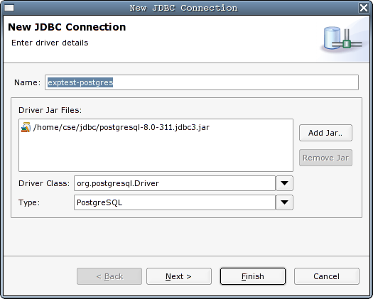
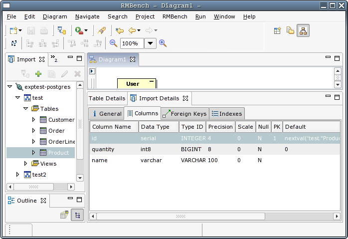

Reverse Engineering
Reverse Engineering is the term used for importing metadata
from an existing database. RMBench provides 2
views for this purpose:
- the Import View initially shows a list
of accessible external databases. After loading database metadata from
a database, the root node can be expanded to show the details of the
database schema.
- the Import Details View shows the
details for an imported schema element, e.g. a table
By default, these views are opened within the RMBench perspective.
If
they are not already open, you can open them by selecting the Reverse Engineer entry from the RMBench menu, or by clicking the button in the main workbench
toolbar. Closing the Import View will also
automatically close the Import Details View.
Registering a Database
Before you can start the reverse engineering process, you need to
register an external database. This is done by clicking the Add toolbar button ( ).
You will see a wizard dialog open that guides you through the steps of
registering a new database
connection. RMBench uses JDBC to access the database, so you
will have to supply a JDBC driver
library (usually available with your database product) as part of this
procedure.
).
You will see a wizard dialog open that guides you through the steps of
registering a new database
connection. RMBench uses JDBC to access the database, so you
will have to supply a JDBC driver
library (usually available with your database product) as part of this
procedure.

Note that registering a database really means
specifying connection data for accessing the database, including the
schemas to be loaded through this connection. You could therefore
register multiple connections to the same database, possibly with
different schema contents.
Note also that the databases registered in this step
are the same that are be used for model export
Load Metadata
Once the connection for your database has been defined, you can let RMBench load the database meta
data by pressing the Load Metdata button ()
or choosing the corresponding item from the context menu. The
connection icon will change to the "connected" state, and the metadata
will be visible as tree nodes below the connection node. You can
inspect the detailed import results for each selected table in the
Import Details view:

Note that the loaded metadata represents a live view on
the extenal database is therefore not stored within RMBench.
Import Metadata into a Model
The loaded metadata represents a live view to the database. Before
you can use it as the base for further modelling in RMBench,
you need to convert it into an design model. This process, which we
call importing, can be performed through the following alternative
means:
-
Choose the Import to Model item from
the context menu of any selected
metdata item in the Import view
-
Drag any metadata item over to an opened diagram using the
mouse.
The tables will be laid out
automatically and added to the model.
In both cases, the selected metdata item and all child items will be
imported into the model.
Depending on the database configuration of the
connection and the design model, import may entail a conversion. As
conversion between disparate databases can cause loss of information,
we suggest that before performing this step, you re-consider the target
database setting of the design model. Obviously, the best results will
be achievend the database setting of the design model is the same as
the setting of the database connection.
Results
of the import and errors or warnings encountered along the process are
reported in the console.
Note that if you import only parts of a model, e.g. by
dragging tables individually, foreign key references that point beyond
the current design model may break. We therefore suggest that you
always import inter-related schema elements as a whole.